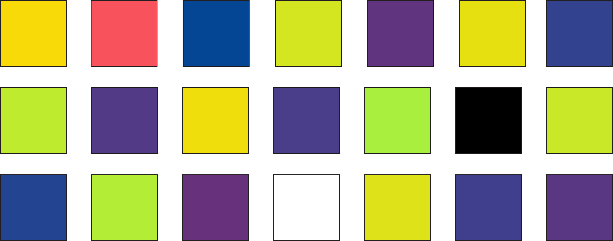

<!DOCTYPE html>
<html>
  <head>
    <title>Experiment</title>

    <script src="jspsych/jspsych.js"></script>
    <script src="jspsych/plugin-preload.js"></script>
    <script src="jspsych/plugin-html-keyboard-response.js"></script>
    <script src="jspsych/plugin-html-keyboard-responseMAS.js"></script>
    <script src="jspsych/plugin-image-keyboard-response_MAS.js"></script>
    <script src="jspsych/plugin-image-keyboard-response.js"></script>
    <script src="jspsych/plugin-html-slider-response.js"></script>
    <script src="jspsych/plugin-html-button-response.js"></script>
    <script src="jspsych/plugin-survey-text.js"></script>
    <script src="jspsych/plugin-fullscreen.js"></script>
    <script src="jspsych/plugin-survey-multi-choice.js"></script>
    <script src="jspsych/plugin-survey-multi-select.js"></script>

    <script src="https://unpkg.com/@jspsych-contrib/plugin-pipe"></script>
   
    <script src="colorCalibration_srgb_InherentFeat.js"></script>
    <script src = "ishiharaPlates.js"></script>
    <link href="jspsych/jspsych.css" rel="stylesheet" type="text/css" />

  </head>
  <body></body>

<!--------------------- Here is where the experiment is created ------------------------------------------->
  <script>


// ---------- UPDATE THESE AS NEEDED------------------//

    //General experiment info to update
    var expType = 2 // 0 = SONA; in-lab version; 1 = sona ONLINE ; 2 = CloudResearch online version (relevant for consent & debriefing)
        console.log("consent:", expType)
        console.log("Updated last: 7/9")

  
    var expTime = 15; // How long experiment will take in minutes
    var experimenterName = "mschoenl@highpoint.edu"  //Update to your contact info. this is presented if an error arises for a participantd
    var numConditions = 2; //Number of conditions. 
    var numTasks = 2;  //Number of experimental tasks (not counting demographics/consent)

    //CloudResearch completion code 
    var completion_code = "268FC66898";  //Code copied from mTurk Cloud Research Fixed completion code


    // Set background color  
    document.body.style.backgroundColor = "rgb(121, 121, 121)"             

   


/*----------------------------------START OF EXPERIMENT TIMELINE: DO NOT CHANGE ------------------------------------ */

  // Pop-up box if people try to leave the page (including refreshing) 
    window.onbeforeunload = function() {
        return "If you leave or refresh the page, you will not be able to finish the experiment.";
    };


    //general overview/opening items
    var jsPsych = initJsPsych();

          async function createExperiment(){
                    const condition = await jsPsychPipe.getCondition("w9CB1tomDMJn");
                    if(condition == 0) { timeline = timeline }
                    if(condition == 1) { timeline = timeline }
                    //jsPsych.run(timeline);
                    var timeline = [];

                  }
          createExperiment();


    //give subjects a random ID
    const subject_id = jsPsych.randomization.randomID(10);
    const filename = `${subject_id}.csv`;
    var urlvar = jsPsych.data.urlVariables();
    var workerID = urlvar.id // urlvar.id  


    // Set condition
    function getRandomIntInclusive(min, max) {
            min = Math.ceil(min);
            max = Math.floor(max);
            return  Math.floor(Math.random() * (max - min + 1));
        }
    assigned_condition = getRandomIntInclusive(0,numConditions-1);
    var whichCondition = assigned_condition; 
    var whichCondition = condition; 

      console.log("whichCondition: ", whichCondition)

  // Get Start time
    var start_time = new Date();

  //Record mturk/SONAID, condition, subjectID, and date info
    jsPsych.data.addProperties({workerID: workerID,  subjectID: subject_id, condition: whichCondition, dateInfo: start_time}); //CHECK THAT THESE OUTPUT


    //Initialize colors
    var calibrationColors = colorCalibration_srgb()
    var promptedColorR1 = calibrationColors["Red"]
    var promptedColorG1 = calibrationColors["Green"]
    var promptedColorB1 = calibrationColors["Blue"]


/*----------------------------------Standard functions & variables ------------------------------------ */

    //Fixation trial
    var fixation = {
        type: jsPsychHtmlKeyboardResponse,
        stimulus: '<div style="font-size:60px;">+</div>',
        choices: "NO_KEYS",
        trial_duration: 500, 
        data: {
            task: 'fixation'
        }
    };


     // var preload = {
    //     type: jsPsychPreload,
    //     images: ['img/blue.png', 'img/orange.png']
    // };s
    // timeline.push(preload);


// ------------------------------------ START OF EXPERIMENT TRIALS ------------------------------------//
   

// define welcome message trial 
    var welcome = {
      type: jsPsychHtmlButtonResponse,
      stimulus: '<strong>Welcome to our experiment!</strong>' +
            '<p>Please make sure you are using a computer to complete this experiment (i.e. NOT a phone or tablet).'+
            "<br>Please ensure your monitor's brightness is turned up."+
            '<br>For best viewing, please sit approximately 1.5 feet to 2 feet from your computer screen.</p>'+
            '<br>At the bottom of this screen, you will see a button that says "Begin Experiment".'+
            '<br>Please only click that button when you are ready to complete the '+expTime+' minute experiment in one sitting.</p>'+
            '<br> Once you click that button, it will not be possible to restart the experiment.',
       choices: ['Begin Experiment'] 
    };
    timeline.push(welcome);


 
 // Consent form
    var consentSign = {
            type: jsPsychSurveyMultiSelect,
            questions: [
                {prompt: 
                  `<div style="max-width: 900px; margin: 0 auto; padding: 20px; border: 1px solid #ccc; border-radius: 10px;">
                   <div style="text-align:center;"><strong>HIGH POINT UNIVERSITY</strong></div>
                  <p><div style="text-align:center;"><strong>Research Participant Consent Form</strong></div>
                  <br><br><strong>Title of the Study: </strong>Investigating how people perceive and interpret visual information
                 <p><strong>Principal Investigator:</strong> Dr. Melissa Schoenlein (mschoenl@highpoint.edu)
                  <br><br>You have been asked to participate in a research study. The information in this form is meant to help you decide whether or not to participate. If you have any questions, please ask.
                  <br><br><strong><u>Why you are being asked to be in this research study:</u></strong>
                  <br>You have been asked to participate because you saw a description of the study, met the eligibility criteria, and signed up to participate via CloudResearch and/or Amazon Mechanical Turk. To be eligible, you must be at least 18 years of age.
                  <br><br>The study will include approximately 1000 adults who agree to participate via Cloud Research and/or Amazon Mechanical Turk HITs.
                  <br><br><strong><u>What the study is about:</u></strong>
                  <br>You are invited to participate in this research study about how visual features influence the ability to perceive, interpret, and remember information in visual displays.  The purpose of this research is to understand the factors that influence how people learn about, perceive, and interpret visual information.
                  <br><br><strong><u>What you will be asked to do:</u></strong>
                  <br>If you decide to participate in this research, you will be shown visual displays on a computer containing images and/or text. You will be asked to make judgments about these displays. For example, you may see a novel object and be asked to learn the object’s name or you may be presented with colors and asked to rate how much that color reminds you of certain objects. These judgements can be made using button presses on a keyboard/mouse. You may also be asked to respond to questions about your experience during the experiment. For example, you may be asked what strategy you used to complete a task or how challenging the task felt. You may also be asked to complete a standard color vision test, which will examine your ability to perceive different colors. Some tasks may include sounds (e.g., beeps) that will be played via the computer speakers and/or headphones.
                  <br>You will be asked to complete 1-6 tasks or questionnaires. Your participation will include 1 session that will last approximately 15-60 minutes, as indicated on SONA when you signed up to participate. 
                  <br><br><div style="text-align:center;"><strong><u>Important Things to Know about Being Part of the Study</u></strong></div>
                  <br> <div style="margin-left: 40px; text-align: left;">1. <strong>You don't have to do this.</strong> Participation is completely voluntary and you can withdraw at any time without penalty, even after you start. Deciding not to participate or deciding to withdraw will not affect your relationship with the investigator or High Point University.</div>
                  <br> <div style="margin-left: 40px; text-align: left;">2. <strong>Pay.</strong> The amount of compensation depends on the length of the task, based on a rate of $10 per hour. The compensation amount for this HIT, as specified in the HIT description, was pre-determined based on the amount of time it took previous participants to do similar tasks. If you do withdraw prior to the end of the study, you will receive no compensation.</div>
                  <br> <div style="margin-left: 40px; text-align: left;">3. <strong>Benefits.</strong> There are no direct benefits to participants for participating in this study. This research will benefit the field of psychology by furthering our knowledge of human behavior.</div>
                  <br> <div style="margin-left: 40px; text-align: left;">4. <strong>Risks to you.</strong> We believe that there are minimal risks to you.  If you are hurt or experience any negative effects, you may seek treatment through a health service provider.</div>
                  <br> <div style="margin-left: 40px; text-align: left;">5. <strong>Your responses will be kept confidential.</strong> Your name will not be stored with your responses and only those involved in the research project will have access to the responses of individuals.</div>
                  <br> <div style="margin-left: 40px; text-align: left;">6. <strong>If you have questions about the study</strong> Please contact Dr. Melissa Schoenlein at <u>mschoenl@highpoint.edu</u> or 336-841-2878.</div> 
                  <br> <div style="margin-left: 40px; text-align: left;">7. <strong>If you have questions regarding your rights as a subject in this study.</strong> You may contact Dr. Kimberly Wear Jones, IRB Chair, (336) 841-9246, kwjones@highpoint.edu.</div>
                  <br><br><strong>Your data will be used for:</strong> Your data may be used as part of publications about this research. Further, your data may be sent to researchers outside of High Point University so that other scientists can replicate the experiment findings. Any personal information that could identify you will be removed before the data is shared or used publications.
                  <br><br> By clicking the box below, you confirm that you have read this consent form, had an opportunity to ask any questions about your participation in this research and voluntarily consent to participate. You may print a copy of this form for your records.
                  <br><br>Please click the box below next to the text “I consent” to give your informed consent to participate. 
                </div>`,
                options: [`<strong>I consent</strong>`],
                horizontal: false,
                required: true,
                name: 'Consent'},
                ],
            button_label: "Start Experiment",
            };

  timeline.push(consentSign);


/*-------------------- BEGINNING OF DEMOGRAPHIC INFO ----------------------------------------*/ 


    var enter_fullscreen = {
      type: jsPsychFullscreen,
      fullscreen_mode: true
  }
  timeline.push(enter_fullscreen)
   

// Overview instructions of experiment 
    var overview_instructions = {
        type: jsPsychHtmlButtonResponse,
        stimulus: 'Welcome! <p> This experiment involves several parts: demographic information, followed by '+numTasks+' tasks.' + 
            '<p> It will take about '+expTime+' minutes to complete all parts.',
        choices: ['Begin']
    }
    timeline.push(overview_instructions);

    

// Demographic questions
    // Age, gender, race/ethnicity, and language  
    var age_lang_demo = {
        type: jsPsychSurveyText,
        questions: [
            {prompt: "Age", name: 'Age', rows: "1", columns: "3", required: true,},
            {prompt: "Gender", name: 'Gender', rows: "1", columns: "15", required: true,},
            {prompt: "Race/ethnicity", name: 'Race/ethnicity', rows: "1", columns: "30", required: true,},
            {prompt: "List all languages you know", name: "Languages", rows: "1", columns: "40", required: true,}
            ],
        preamble: "Please answer the following questions. Click 'Done' to continue. ",
        button_label: "Done",
        randomize_question_order: false
        }
    timeline.push(age_lang_demo);


/*----------------------------------Part 1: Bird Categorization------------------------------------ */

//Randomize which condition participants are in 

//CONDITION 0 [yellow = inherent]
 //Speature on left -->     // yellow & green --> inherent eat fish [speatures always inherent & on the left]
 //Crecies on right -->    // purple & blue --> accident eat bug [crecies always accident & on the right]

//CONDITION 1 [purple = inherent]
 //Speature on left -->     // purple & blue --> inherent [speatures always inherent & on the left]
 //Crecies on right -->    // yellow & green --> accident eat but [crecies always accident & on the right]


  //Define bird stimuli based on condition
    if (whichCondition == 0){
      var speaturesColor = "yellow"
      var creciesColor = "purple"
      var yellowSpecies = "Speature"
      var purpleSpecies = "Crecies"
      var inherentColor1 = speaturesColor
      var inherentColor2 = "green"
      var accidentColor1 = creciesColor
      var accidentColor2 = "blue"

    }else if (whichCondition == 1){
      var speaturesColor = "purple"
      var creciesColor = "yellow"
      var yellowSpecies = "Crecies"
      var purpleSpecies = "Speature"
      var inherentColor1 = speaturesColor
      var inherentColor2 = "blue"
      var accidentColor1 = creciesColor
      var accidentColor2 = "green"
    }

    console.log("speatures", speaturesColor)
    console.log("crecies", creciesColor)

   
   
    // Define instructions trial 
    var instrBirds = {
      type: jsPsychHtmlKeyboardResponse,
      stimulus: `
      <div style="max-width: 1200px; margin: 0 auto; padding: 20px;">
        <p> <strong>TASK 1</strong>
        <p>Two types of bird-like animals, Speatures and Crecies, have recently been discovered. The scientists found that the animals have colored spots that are different between the two bird types.
          Speatures are born with `+speaturesColor+` spots and Crecies are born with `+creciesColor+` spots, as been below.</p>

        <p>These spots can change colors based on their diet:</p>
        <p>Speatures <strong> regularly</strong> eat tiny fish as a part of their diet that change their spots from `+inherentColor1+` to `+inherentColor2+`.
        <br>Crecies normally eat leafy plants that do not change their purple spot color. Sometimes they <strong>accidentally</strong> swallow small bugs that change their spots from `+accidentColor1+` to `+accidentColor2+`.</P>

              <div style="display: flex; justify-content:  center; gap: 5px; margin: -10px 0;">
              <div style="text-align: center;">
                
                <p style="margin-top: -35px;"><strong>Speature</strong><br>Press the Left Arrow key</p>
              </div>
              <div style="text-align: center;">
                
               <p style="margin-top: -35px;"><strong>Crecies</strong><br>Press the Right Arrow key</p>
              </div>
          </div>

        <p>Your job, as the research assistant, is to identify if the animal is a Speature or a Crecies.
         <br> On each trial, an animal image or description will appear on the screen, with the word "Speature" on the left, and "Crecies" on the right. 
         <p> If you think the text describes or the image displays a Speature, press the left arrow key. 
         <br> If you think the text describes or the image displays a Crecies, press the right arrow key. 
         <p> After you respond, you will be told the correct answer. The animal or description will move below the correct name.
        <br>  There will be a short pause and then the next trial will begin. At first it may feel like you're guessing, but don't worry! As you see more animals and descriptions, you will begin to learn which animals and descriptions are which. 
        <p>Press the spacebar to begin.</p>
        </div>
      `,
      post_trial_gap: 500, 
      choices: [" "],
      data: {
            task: 'instructions',
      }
    };
    timeline.push(instrBirds);

   

 //Create procedure
  const colors = ["yellow", "green", "purple","blue"];
  const numbers = [0, 1, 2, 3, 4];
  let bird_stimuli = [];

    for (let num of numbers) {
      for (let color of colors) {
        //yellow green = left; pruple blue = right
         let correct_response = (color === inherentColor1 || color === inherentColor2) 
            ? "ArrowLeft" 
            : "ArrowRight";
          let targetName = (color === inherentColor1 || color === inherentColor2) 
            ? "Speature" 
            : "Crecies";
        bird_stimuli.push({
          stimulus: `img/${num}_${color}.png`,
          correct_response: correct_response,
          targetName: targetName,
          body_number: num,
          body_color: color,
        });
      }
    }


    //Bird presentation trial
    var showBird = {
        type: jsPsychImageKeyboardResponseMAS,
        stimulus: jsPsych.timelineVariable('stimulus'),
        stimulus_height: 500, 
        stimulus_top: 100,
        maintain_aspect_ratio: true,
        render_on_canvas: false,
        choices: ['ArrowLeft', 'ArrowRight'],
        prompt: `<div style="position: absolute; top: 100px; left: 0px; width: 100%; text-align: center;">
              <p style="font-size: 25px;">Is this a Speature or a Crecies?<br>Press the left or right arrow key</p>
              <div style="display: flex; justify-content: space-around;">
                <p style="font-size: 30px;">Speature</p>
                <p style="font-size: 30px;">Crecies</p>
              </div>
            </div>`,
        on_finish: function(data){
            data.correct = jsPsych.pluginAPI.compareKeys(data.response, data.correct_response);
       },
        data: {
            task: 'bird sorting',
            body_number: jsPsych.timelineVariable('body_number'),
            body_color: jsPsych.timelineVariable('body_color'),
            correct_response: jsPsych.timelineVariable('correct_response'),
            targetName: jsPsych.timelineVariable('targetName')  
        }
    }


     //Bird feedback trial
      var feedbackBird = {
          type: jsPsychImageKeyboardResponseMAS,
          stimulus: jsPsych.timelineVariable('stimulus'),
          stimulus_height: 500,
          stimulus_top:100,
          maintain_aspect_ratio: true,
          choices: "NO_KEYS",
          trial_duration: 500,  
          render_on_canvas: false,
          on_start: function(trial) {
            const last_trial = jsPsych.data.get().last(1).values()[0];
            const correct = last_trial.correct;
            const targetName = last_trial.targetName; // 
            let feedbackText = correct
              ? `YES<br>This is a <strong>${targetName}</strong>`
              : `NO<br>This is a <strong>${targetName}</strong>`;
            trial.prompt = `
                  <div style="position: absolute; top: 100px; left: 0px; width: 100%; text-align: center;">
                    <p style="font-size: 25px;">${feedbackText}</p>
                    <div style="display: flex; justify-content: space-around;">
                      <p style="font-size: 30px;">Speature</p>
                      <p style="font-size: 30px;">Crecies</p>
                    </div>
                  </div>`;
            },
          data: {
            task: 'bird feedback'
          },
        };

        

     //Bird feedback movement trial
      var feedbackMoveBird = {
          type: jsPsychImageKeyboardResponseMAS,
          stimulus: jsPsych.timelineVariable('stimulus'),
          stimulus_height: 500,
          stimulus_top: 0,
          maintain_aspect_ratio: true,
          choices: "NO_KEYS",
          trial_duration: 500,  
          render_on_canvas: false,      
          on_start: function(trial) {
            const last_trial = jsPsych.data.get().last(2).values()[0];
            const correct = last_trial.correct;
            const targetName = last_trial.targetName;
            let feedbackText = correct
              ? `YES<br>This is a <strong>${targetName}</strong>`
              : `NO<br>This is a <strong>${targetName}</strong>`;
            trial.prompt = `
                  <div style="position: absolute; top: 100px; left: 0px; width: 100%; text-align: center;">
                    <p style="font-size: 25px;">${feedbackText}</p>
                    <div style="display: flex; justify-content: space-around;">
                      <p style="font-size: 30px;">Speature</p>
                      <p style="font-size: 30px;">Crecies</p>
                    </div>
                  </div>`;
            if (targetName == "Speature"){
                trial.stimulus_left = -350;
            }else if (targetName == "Crecies"){
                trial.stimulus_left = 350;
            }
          },
          data: {
            task: 'bird feedback movement'
          },
        };
        
        
//Text trials
  //defining stimuli
  let text_stimuli = [
    {
      stimulus_text: `<div style="display: flex; justify-content: center; gap: 5px; margin: -10px 0; width: 150px; font-size: 25px;">Born with `+creciesColor+` spots</div>`,
      correct_response: "ArrowRight",
      body_description: `Born with `+creciesColor+` spots`,
      targetName: "Crecies"
    },
    {
      stimulus_text: `<div style="display: flex; justify-content: center; gap: 5px; margin: -10px 0; width: 200px; font-size: 25px;">Spots change colors because animal regularly eats fish</div>`,
      correct_response: "ArrowLeft",
      body_description: `Spots change colors because animal regularly eats fish`,
      targetName: "Speature"
    },
    {
      stimulus_text: `<div style="display: flex; justify-content: center; gap: 5px; margin: -10px 0; width: 150px; font-size: 25px;">Born with `+speaturesColor+` spots</div>`,
      correct_response: "ArrowLeft",
      body_description: `Born with `+speaturesColor+` spots`,
      targetName: "Speature"
    },
    {
      stimulus_text: `<div style="display: flex; justify-content: center; gap: 5px; margin: -10px 0; width: 200px; font-size: 25px;">Spots change colors if animal accidentally eats bugs</div>`,
      correct_response: "ArrowRight",
      body_description: `Spots change colors if animal accidentally eats bugs`,
      targetName: "Crecies"
    }
  ];

  //show text questions
  var showText = {
    type: jsPsychHtmlKeyboardResponse,
    stimulus: jsPsych.timelineVariable('stimulus_text'),
    choices: ['ArrowLeft', 'ArrowRight'],
    prompt: `
      <div style="position: absolute; top: 100px; left: 0; width: 100%; text-align: center;">
        <p style="font-size: 25px;">Is this a Speature or a Crecies?<br>Press the left or right arrow key</p>
        <div style="display: flex; justify-content: space-around; margin-top: 20px;">
          <p style="font-size: 30px;">Speature</p>
          <p style="font-size: 30px;">Crecies</p>
        </div>
      </div>
    `,
    data: {
      task: 'text sorting',
      correct_response: jsPsych.timelineVariable('correct_response'),
      body_description: jsPsych.timelineVariable('body_description'),
      targetName: jsPsych.timelineVariable('targetName')
    },
    on_finish: function(data) {
      data.correct = jsPsych.pluginAPI.compareKeys(data.response, data.correct_response);
    }
  };


 //Text feedback trial (this is what I can't get to work - you had it!!)
      var feedbackText = {
          type: jsPsychHtmlKeyboardResponse,
          stimulus: jsPsych.timelineVariable('stimulus_text'),
          choices: "NO_KEYS",
          trial_duration: 500,  
          render_on_canvas: false,
          on_start: function(trial) {
            const last_trial = jsPsych.data.get().last(1).values()[0];
            const correct = last_trial.correct;
            const targetName = last_trial.targetName; // 
            let feedbackText = correct
              ? `YES<br>This is a <strong>${targetName}</strong>`
              : `NO<br>This is a <strong>${targetName}</strong>`;
            trial.prompt = `
                  <div style="position: absolute; top: 100px; left: 0px; width: 100%; text-align: center;">
                    <p style="font-size: 25px;">${feedbackText}</p>
                    <div style="display: flex; justify-content: space-around;">
                      <p style="font-size: 30px;">Speature</p>
                      <p style="font-size: 30px;">Crecies</p>
                    </div>
                  </div>`;
            },
          data: {
            task: 'text feedback'
          },
        };


        
     //Bird feedback movement trial
      var feedbackMoveText = {
          type: jsPsychHtmlKeyboardResponseMAS,
          stimulus: jsPsych.timelineVariable('stimulus_text'),
          // stimulus_height: 500,
          // stimulus_top: 0,
          maintain_aspect_ratio: true,
          choices: "NO_KEYS",
          trial_duration: 500,  
        //  render_on_canvas: false,      
          on_start: function(trial) {
            const last_trial = jsPsych.data.get().last(2).values()[0];
            const correct = last_trial.correct;
            const targetName = last_trial.targetName;
            let feedbackText = correct
              ? `YES<br>This is a <strong>${targetName}</strong>`
              : `NO<br>This is a <strong>${targetName}</strong>`;
            trial.prompt = `
                  <div style="position: absolute; top: 100px; left: 0px; width: 100%; text-align: center;">
                    <p style="font-size: 25px;">${feedbackText}</p>
                    <div style="display: flex; justify-content: space-around;">
                      <p style="font-size: 30px;">Speature</p>
                      <p style="font-size: 30px;">Crecies</p>
                    </div>
                  </div>`;
            if (targetName == "Speature"){
                trial.stimulus_left = -350;
            }else if (targetName == "Crecies"){
                trial.stimulus_left = 350;
            }
          },
          data: {
            task: 'text feedback movement'
          },
        };
        


  //Block for bird trials
  var bird_block = {
  timeline: [fixation, showBird, feedbackBird, feedbackMoveBird],
  timeline_variables: bird_stimuli,
  randomize_order: true,
  repetitions: 1
};

  //block for text trials
  var text_block = {
    timeline: [fixation, showText, feedbackText, feedbackMoveText],
    timeline_variables: text_stimuli,
    randomize_order: true,
    repetitions: 1 
  };

  //alternate between text and bird blocks of trials, which results in repetitions of each. 
  //currenlty 3 repetitions of each text blcok & 2 repetitions of each bird
  var block_sequence = {
    timeline: [text_block, bird_block, text_block, bird_block, text_block],
  };
  timeline.push(block_sequence)


/* ---------------------------------- TASK 2: ASSOCIATION RATINGS ---------------------------------------- */


// Define instructions trial 
var preload
    var instrAssoc = {
       type: jsPsychHtmlSliderResponse,    
      stimulus: `
      <div style="max-width: 1200px; margin: 0 auto; padding: 20px;">
        <p><strong>TASK 2</strong>
        <p>In this task, you will be presented with colored squares, one at a time. You will be asked to rate how much you associate each color with the animals:</p>
        <p><strong>Speature</strong> & <strong>Crecies</strong></p>
        <p>You will be asked to rate the association between each color and species on a scale from '<strong>Not at all</strong>' to '<strong>Very much</strong>', like the one below. To respond, slide the cursor along the response scale and then click the '<strong>Continue</strong>' button to record your response and start the next trial.</p>
        <p>There will be two blocks of trials, one for each animal. You will be asked to rate all of the colors for each animal before going on to the next block.</p>
       
        <p>Before starting, take a look at all the colors presented here and think about which color you associate the <strong>least</strong> (Not at all) and <strong>most</strong> (Very much) for each animal.

      <div style="display: flex; justify-content:  center; gap: 5px; margin: -10px 0;">
                
              <p style="margin-top: -35px;">
              </div> 
        <p>The color you associate the least for each animal should be rated on the far left of the scale ('Not at all'), and the color you associate the most for each animal should be rated on the far right of the scale ('Very much'). All other colors should be rated somewhere in-between.
        <p>Please press the <strong>Start</strong> button to begin this block.
        </div>
      `,
      post_trial_gap: 500, 
      labels: [`<div style="font-size: 25px;">Not at<br>all</div>`, `<div style="font-size: 25px;">Very<br>much</div>`],
      min: -200,
      max: 200, 
      slider_width: 400, 
      slider_start: 0,
      step: 1,
      require_movement: false, 
      response_ends_trial: true,
      button_label: ["Start"],
      data: {
        task: "instructions"
      }
    };
    timeline.push(instrAssoc);

// Assign color category
let speciesNames= [`Speatures`,`Crecies`];
let colorNumberIndex= [0,1,2,3,4,5,6,7,8,9,10,11,12,13,14,15,16,17,18,19,20]
let colorSeq;
let colorSpecies;
  

  //speatures set
  let rating_stimuli_Speatures= [];
  for(let colorNumber of colorNumberIndex){
      if (colorNumber=== 0) {
      colorSeq = "bodyColor";
      colorSpecies = "both"
    } else if (colorNumber >= 1 && colorNumber<= 9) {
      colorSeq = "yellows";
      colorSpecies = yellowSpecies
    } else if (colorNumber >= 10 && colorNumber <= 18) {
      colorSeq = "purples";
      colorSpecies = purpleSpecies
    } else if (colorNumber >= 19 && colorNumber <= 20) {
      colorSeq = "achromatic";
      colorSpecies = "neither"
    } else {
      colorSeq = "unknown"; // fallback in case of weird index
      colorSpecies = "unknown"
    }
       rating_stimuli_Speatures.push({stimulus: `<div style="position:relative; top: -100px; font-size: 30px;">
              How much do you associate this color with
              <p><strong>Speatures</strong>?</p></div>
            <div style="width:100px;height:100px; position: relative; left: 250px; top: -50px; background-color:rgb(`+promptedColorR1[colorNumber]+`,`+promptedColorG1[colorNumber]+`,`+promptedColorB1[colorNumber]+`);"></div>`,
            colorSeq: colorSeq,
            colorNumber: colorNumber,
            species: "Speature",
            colorSpecies: colorSpecies
      })
    }

  //Crecies set
  let rating_stimuli_Crecies= [];
  for(let colorNumber of colorNumberIndex){
      if (colorNumber=== 0) {
          colorSeq = "bodyColor";
          colorSpecies = "both"
        } else if (colorNumber >= 1 && colorNumber<= 9) {
          colorSeq = "yellows";
          colorSpecies = yellowSpecies
        } else if (colorNumber >= 10 && colorNumber <= 18) {
          colorSeq = "purples";
          colorSpecies = purpleSpecies
        } else if (colorNumber >= 19 && colorNumber <= 20) {
          colorSeq = "achromatic";
          colorSpecies = "neither"
        } else {
          colorSeq = "unknown"; // fallback in case of weird index
          colorSpecies = "unknown"
       }
    rating_stimuli_Crecies.push({stimulus: `<div style="position:relative; top: -100px; font-size: 30px;">
              How much do you associate this color with
              <p><strong>Crecies</strong>?</p></div>
            <div style="width:100px;height:100px; position: relative; left: 250px; top: -50px; background-color:rgb(`+promptedColorR1[colorNumber]+`,`+promptedColorG1[colorNumber]+`,`+promptedColorB1[colorNumber]+`);"></div>`,
            colorSeq: colorSeq,
            colorNumber: colorNumber,
            species:"Crecies",
            colorSpecies: colorSpecies        
          })
    }

  //Association rating trial
    var squareRate =  {
      type: jsPsychHtmlSliderResponse,    
      stimulus: jsPsych.timelineVariable('stimulus'),
      labels: [`<div style="font-size: 25px;">Not at<br>all</div>`, `<div style="font-size: 25px;">Very<br>much</div>`],
      min: -200,
      max: 200, 
      slider_width: 400, 
      slider_start: 0,
      step: 1,
      require_movement: true, 
      response_ends_trial: true,
      data: {
        task: "rating trial",
        colorSeq: jsPsych.timelineVariable('colorSeq'),
        colorNumber: jsPsych.timelineVariable('colorNumber'),
        targetName: jsPsych.timelineVariable('species'),
        colorSpecies: jsPsych.timelineVariable('colorSpecies')
      }
    }

    //Block Break
    var block_break_speature = {
        type: jsPsychHtmlKeyboardResponse,
        stimulus: `<div style="font-size:25px;">In this block, you will be asked to rate your association between a given color and <p><strong>Speatures</strong>
                  <p><p>Press spacebar to continue.</div>`,
        choices: " ",
        data: {
            task: 'block break'
        }
    };

    //Block Break
    var block_break_crecies = {
        type: jsPsychHtmlKeyboardResponse,
        stimulus: `<div style="font-size:25px;">In this block, you will be asked to rate your association between a given color and <p><strong>Crecies</strong>
                  <p><p>Press spacebar to continue.</div>`,
        choices: " ",
        data: {
            task: 'block break'
        }
    };


    //Speatures block
    var speatures_trials = {
        timeline: [fixation, squareRate],
        timeline_variables: rating_stimuli_Speatures,
        repetitions: 2,
        randomize_order: true
    }
    var speatures_procedure = {
        timeline: [block_break_speature, speatures_trials],
    }
    
    //Crecies block
    var crecies_trials = {
        timeline: [fixation, squareRate],
        timeline_variables: rating_stimuli_Crecies,
        repetitions: 2,
        randomize_order: true

    }
    var crecies_procedure = {
        timeline: [block_break_crecies, crecies_trials],
    }


    //Rating procedure all 
    var rating_procedure = {
        timeline: jsPsych.randomization.shuffle([speatures_procedure, crecies_procedure]),
    }
    timeline.push(rating_procedure);


/* ---------------------------------- End of main experiment ---------------------------------------- */

/* ------------------------------------ Color vision check --------------------------------------- */


// //Function for ishihara plates (online only)
 ishiharaPlates()


/* --------------------------------------- End Color vision check ------------------------ */
  

// Save data
    const save_data = {
        type: jsPsychPipe,
        action: "save",
        experiment_id: "w9CB1tomDMJn",
        filename: filename,
        data_string: ()=>jsPsych.data.get().csv()
    };
    timeline.push(save_data)


    //Debrief block
    // var debrief_block = {
    //     type: jsPsychHtmlKeyboardResponse,
    //     stimulus: function() {
    //         var trials = jsPsych.data.get().filter({task: 'response'});
    //         var correct_trials = trials.filter({correct: true});
    //         var accuracy = Math.round(correct_trials.count() / trials.count() * 100);
    //         var rt = Math.round(correct_trials.select('rt').mean());

    //         return `<p>You responded correctly on ${accuracy}% of the trials.</p>
    //         <p>Your average response time was ${rt}ms.</p>
    //         <p>Press any key to complete the experiment. Thank you!</p>`;

    //     }
    // };
    // timeline.push(debrief_block);


// Exit fullscreen
    var exit_fullscreen = {
      type: jsPsychFullscreen,
      fullscreen_mode: false
  }
  timeline.push(exit_fullscreen)
   

        //Debrief block
    var debrief_block = {
        type: jsPsychHtmlKeyboardResponse,
        stimulus: `<p>Thank you for participating in our research study. </p>
            <p>The purpose of this study was to examine how causal information about the color of objects influences the strength of associations formed between the color and the object.
          In task 1, you learned about 2 different bird-like animals that varied in the color of their spots. Some animals’ spots changed color because they regularly ate fish (an inherent cause). Other animals’ spots sometimes changed color because they accidentally ate bugs (an accidental cause). In task 2, you indicated your associations between different colors and the different animals. 
        Specifically, our research question concerns whether causal knowledge influences the strength of the color-concept associations you formed for colors you saw the spots appear in and other, previously unseen colors. We are interested in whether you reported stronger or weaker associations (in task 2), if you were told that the spots that you saw on the birds (in task 1) were inherent or an accidental cause.
        Please copy and paste the below code into CloudResearch to confirm your participation: 
	        `+completion_code+`
          After you have entered the code in CloudResearch, you can close this page. 
          Thank you for participating! `
        };
    timeline.push(debrief_block);

 

  // Run timeline
  var jsPsych = initJsPsych({
    on_finish: function() {
        jsPsych.data.displayData();
    }
    });


    jsPsych.run(timeline)


  </script>
</html>